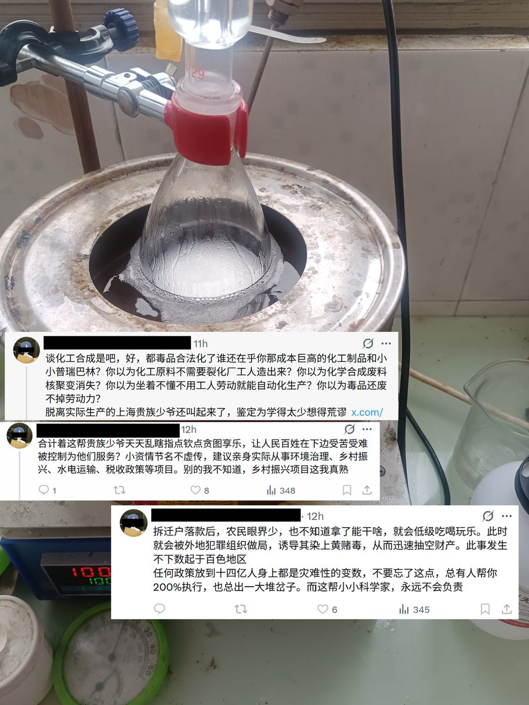

针对“永远不会负责”这一说，鉴于正是因为某一件连此人自己都后悔干过的，且在圈内性质应该算很恶劣的事情，我才被诱导进入高原😢(类似事件在上海也屡次发生过)
因此，我觉得此人首先应该为诱导我进入高原这一事负责；而且，我觉得要是我在圈内干了什么应当负责的事，此人应该负连带责任才对😁

因此，我觉得此人首先应该为诱导我进入高原这一事负责；而且，我觉得要是我在圈内干了什么应当负责的事，此人应该负连带责任才对😁

窝可不是贵族小少爷，窝也是百姓啊，父母都是工农出身，没有他们的辛苦劳动，窝哪能在大城市成长呢?🥺
你嫌化工制品成本高，我还嫌土地价格贵、生产周期长呢。而且，我坚持理论与实践的统一，未曾与生产实践脱节，如图，可别瞧不起我啊☝🤓(都是合法收藏品罢了)
看来，一切只是一场误解罢了，对嘛🥺 https://t.co/VAkHLy3gFD https://t.co/X5e4j5F7B1
你嫌化工制品成本高，我还嫌土地价格贵、生产周期长呢。而且，我坚持理论与实践的统一，未曾与生产实践脱节，如图，可别瞧不起我啊☝🤓(都是合法收藏品罢了)
看来，一切只是一场误解罢了，对嘛🥺 https://t.co/VAkHLy3gFD https://t.co/X5e4j5F7B1